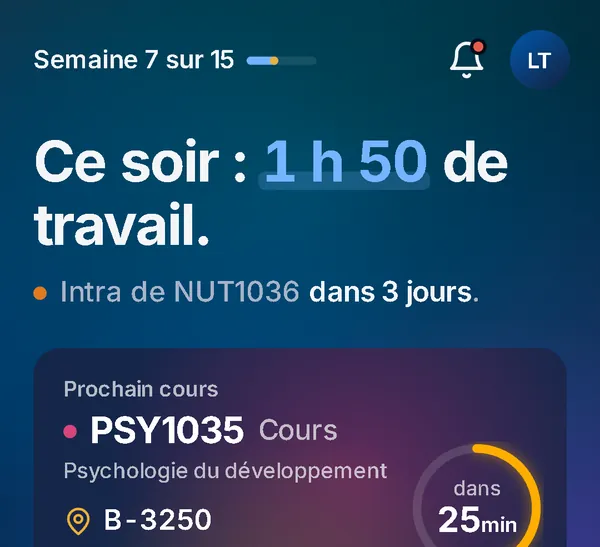
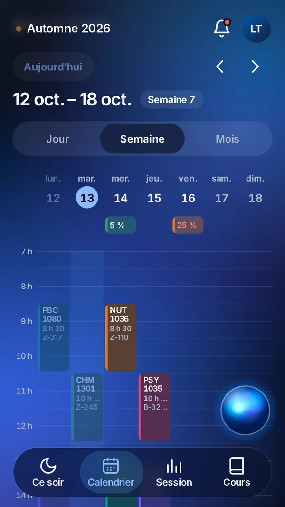
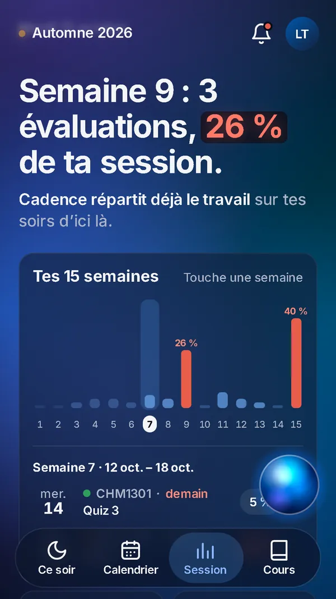
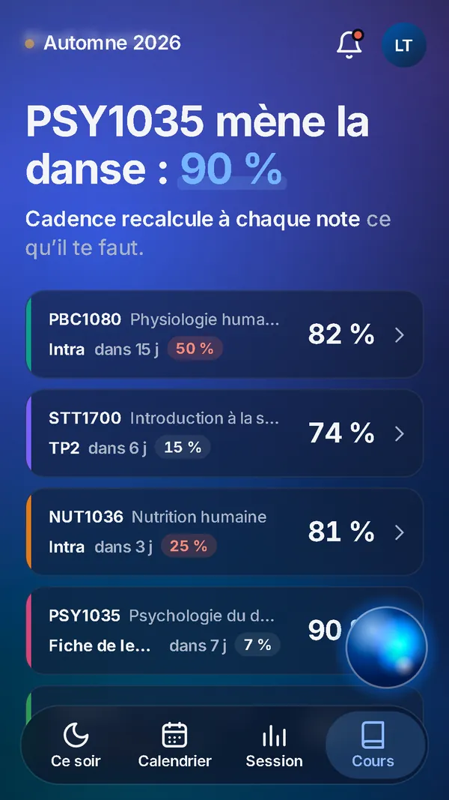

Your whole term. You speak, it follows.
The assistant for your studies. Your timetable, your evaluations, what you still need, and the way you work: you tell it once, it remembers, from one term to the next.
In closed testing: Android first, then iPhone. The app speaks French today.
Illustration: a week of classes. Someone says “Move my lab to Thursday.”, and the lab moves to Thursday; “My psych class on Tuesday is cancelled.”, and the class is struck through; “Add a team meeting Friday at 3 pm.”, and the meeting appears.
An evening of the term.
It does not wait for you. It knows what this week holds, and it tells you at the right moment.
-
4:35 pm
Tonight, what matters.
The last class ends. Cadence tells you what to do tonight and by when: your next class, your plan for the evening, your deadlines for the next seven days.
Check off a block; swipe a deadline to mark it done or put it off.

-
7:00 pm
You speak, it follows.
Say it the way you would tell a friend. It shows you the change before applying it; you confirm, and you can always undo.
- “My class tomorrow is cancelled.”
- “Lab 2 is pushed to October 21.”
- “I’m aiming for a B+ in NUT1036.”

-
Week 9
You see the red week coming.
Three evaluations, 26 % of your term. It spots that week long in advance, the ambience turns red and beats, and the work is spread over your evenings until then.

-
After the midterm
What you need, course by course.
Every grade that comes in updates your current grade and what you need on the rest of the course for the letter you are aiming for.

The captures show the app’s sample term.
Done for tonight.
Every block you check off is a small event: gold rises from the edges, then everything settles down.
The heart of Cadence
It remembers the way you study.
You tell it once how you work: start reviewing a week before an exam, read the instructions of an assignment the day they come out, nothing on Wednesday evenings. Every evening, your plan follows.
It also notices what you actually do. When your evenings no longer look like what you told it, it suggests a change; nothing changes without your yes.
You read everything it knows, in your own words, and correct it in one sentence.
The way you study
What Cadence knows about the way you study
- “I start reviewing a week before an exam.”You said it on Sept. 12.
- “I read the instructions of an assignment the day they come out.”You said it on Sept. 12.
- “Nothing on Wednesday evenings: I work.”You said it on Oct. 3.
- “On Sundays, one hour at most.”Cadence noticed it; you confirmed tonight.
Cadence noticed
Your last three Sundays stopped after one hour. “On Sundays, one hour at most”?
Noted. Your Sundays will count one hour.
Nothing changes. It will not suggest it again without a new reason.
From one term to the next, it grows with you.
An assistant that has known you since your first class. What it knows cannot be rebuilt anywhere else.
-
Your first term
It brings in your courses and your timetable. You tell it how you study; it builds your evenings around that.
-
The next term
It picks up where you left off: the way you review, your busy evenings, what worked.
-
The years go by
Your courses change. It keeps your grades, your past terms and what it has learned about you.
-
Until you graduate
Your calendar, your work and the way you study, in one place, from the first evening to the last.
Your credentials stay with you.
- Your access code and password never leave your phone, and stay on it only if you choose to keep them.
- Cadence reads what your school already shows you; it never posts, changes or sends anything there.
What it knows belongs to you.
- You read each thing it keeps, with the sentence you said, and you correct it or remove it.
- Nothing is sold, nothing is used for advertising. You erase everything whenever you want, in the app or from the Account deletion page.